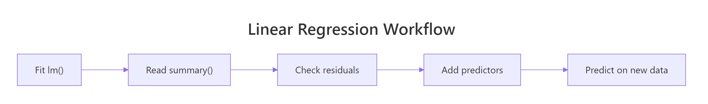

Linear Regression Exercises in R: 15 Practice Problems with Solutions
These 15 linear regression exercises in R walk you from a one-line lm() fit to multiple predictors, diagnostic checks, and prediction intervals, with full runnable solutions so you can build reliable regression habits in one sitting.
Every problem uses base R or built-in datasets like mtcars, cars, and iris, so you can run each block right in the page and tweak the inputs without leaving this tab.
What does a complete linear regression workflow look like in R?
Every exercise below is one stop on the same three-step loop: fit, interpret, check. You build a model with lm(), you read its numbers with summary(), and you verify its assumptions with residual plots. Before the fifteen problems, here is that loop end-to-end in one block so the moving parts are concrete. Everything after this reuses the same function family, with one extra knob per exercise.
Three lines do the work. The intercept of 37.29 is the predicted mpg when wt = 0 (a fictional zero-weight car, useful as a math anchor, not a physical claim). The slope of -5.34 says each extra 1,000 lb of weight subtracts about 5.3 mpg. The R² of 0.75 says weight alone explains roughly 75% of the variation in fuel economy across these 32 cars. The residuals-vs-fitted plot is your assumption check: if you see a clear curve or fan, the linear form is wrong, even when R² looks good.
summary(model) field |
What it tells you | ||
|---|---|---|---|
Estimate |
The fitted coefficient ($\hat\beta_j$) for that predictor | ||
Std. Error |
Sampling uncertainty around the coefficient | ||
t value |
Estimate / Std. Error, the test statistic for $H_0: \beta_j = 0$ |
||
| `Pr(> | t | )` | Two-sided p-value for that t-test |
Multiple R-squared |
Share of variance in $y$ explained by the model | ||
Adjusted R-squared |
R² penalised for each added predictor | ||
F-statistic |
Joint test that all slopes are zero (model vs intercept-only) |
fitted(model) and residuals(model). Once you understand that pair, the rest of the output stops feeling like magic.Try it: Fit a linear regression of stopping distance on speed using the built-in cars dataset. Save the model to ex_fit and print its coefficients. The intercept will look surprising, and that is the lesson.
Click to reveal solution
Explanation: The negative intercept, -17.6 ft, has no physical meaning, a car at 0 mph stops in 0 ft, not negative ft. It is just the math intercept of the best straight line fit through the data range, where speed ranges from 4 to 25 mph. The slope of 3.93 is the meaningful number: each extra mph of speed adds about 3.9 ft of stopping distance.
How do you read the numbers inside summary(lm())?
The summary() output of an lm model is a dashboard, not a paragraph. It has five regions, each answering a different question, and reading them in order keeps you from cherry-picking the friendly numbers and missing the warning ones. This block reuses wt_fit from above so you can look at one familiar fit instead of meeting a new one.
Read it top to bottom. The Residuals quartile summary should look symmetric around zero, which it roughly does here. The Coefficients table tells you the slope of wt is -5.34 with a standard error of 0.56, giving a t-statistic of -9.56 and a p-value far below 0.05, strong evidence the slope is not zero. The Residual standard error of 3.05 is the typical size of a prediction error in mpg units. R² of 0.75 says the model explains 75% of mpg variance. The F-statistic of 91.4 with p ≈ 1e-10 is the global test that some slope is non-zero, useful in multi-predictor models where individual t-tests can mislead.
| Common misreading | Reality |
|---|---|
| "R² is low so the model is useless" | A low R² can still beat the no-predictor baseline; pair it with the F-test and residuals |
| "p < 0.05 means the effect is large" | The p-value is about evidence the slope ≠ 0, not about effect size; read the Estimate for size |
| "The intercept must be physically interpretable" | Often the intercept is just a math anchor outside the data range |
hp and cyl move together in mtcars, adding both to a model can make each one look insignificant on its own t-test even though the overall F-test is highly significant. Read the F-statistic before you delete predictors based on a single p-value.Try it: Pull just the adjusted R² from ex_fit (the cars model). Use summary(ex_fit)$adj.r.squared. The single number is what you would report when comparing this model to a richer one.
Click to reveal solution
Explanation: summary(model) returns a list with r.squared and adj.r.squared as named elements. Adjusted R² penalises each added predictor; for one predictor on 50 rows the penalty is small, so the adjusted (0.644) is only slightly below the multiple R² (0.651). Always report adjusted R² when comparing models with different predictor counts.
What changes when you move from one predictor to many?
A simple regression has one slope. A multiple regression has one slope per predictor, and each slope means something subtly different: the change in $y$ for a one-unit change in that predictor while every other predictor is held constant. That conditioning is the source of most multiple-regression confusion. The clearest way to see it is to fit a simple model and a multiple model on the same data and compare the slope of the shared predictor.
The slope of wt shrank from -5.34 (alone) to -3.17 (with hp and cyl controlled). That is not a contradiction. Some of the apparent effect of weight in the simple model was actually weight standing in for engine size: heavy cars also tend to have more cylinders and more horsepower. Once hp and cyl are in the model, weight only gets credit for the variation that is unique to it. This is the partial-effect interpretation in one picture.
Interaction terms add another layer: instead of asking "what is the effect of weight?", you ask "does the effect of weight depend on the value of another predictor?". The * operator in a formula expands to "main effects plus interaction" automatically.
The model says weight hurts manual transmissions more than automatics: each extra 1,000 lb subtracts 3.8 mpg from an automatic but 9.1 mpg from a manual. That is what the interaction coefficient is doing: it modifies the slope of wt by -5.30 whenever am = 1. If the interaction were not significant, you would drop the * and use + instead.
mt_step <- update(wt_fit, . ~ . + hp + cyl) adds two predictors and update(mt_multi, . ~ . - cyl) drops one. The dot reads as "keep what was on this side." Cleaner than copy-pasting the formula and faster to iterate.Try it: Fit a multiple regression of Sepal.Length on Petal.Length and Petal.Width using the built-in iris dataset. Save it to ex_iris and report just the Petal.Width coefficient. The sign will tell you something about iris geometry.
Click to reveal solution
Explanation: Petal length alone correlates positively with sepal length (longer petals tend to come on flowers with longer sepals). But once Petal.Length is in the model, Petal.Width flips negative: holding petal length fixed, wider petals are associated with slightly shorter sepals. This sign-flip is a textbook example of why partial slopes can surprise you, and why you should always check correlations among predictors before interpreting coefficients in isolation.
How do you check assumptions and predict on new data?
Linear regression rests on four assumptions: linearity, independence, equal-variance residuals (homoscedasticity), and approximately normal residuals. R bundles four diagnostic plots into one call so you can scan all of them at once. Reading them well is mostly pattern recognition; the goal is to spot a problem, not to compute a metric.
Each panel answers one question. Residuals vs Fitted (top-left) tests linearity: a flat horizontal smoother is good; a clear curve means the linear form is missing something. Q-Q Residuals (top-right) tests normality: points hugging the diagonal line are good; systematic curvature in the tails is a flag. Scale-Location (bottom-left) tests equal variance: the smoother should be roughly flat; an upward fan means residual size grows with fitted value. Residuals vs Leverage (bottom-right) flags influential points: anything past Cook's distance contour bands is worth a second look.
Once the model passes inspection, prediction is one function: predict(). The choice between a confidence interval and a prediction interval is the choice between two different questions.
Both intervals share the point estimate of 21.7 mpg. The confidence interval is narrow (20.4 to 22.9) because it asks about the average mpg of all 3,000-lb, 120-hp, 6-cyl cars, averaging shrinks uncertainty. The prediction interval is much wider (16.2 to 27.2) because it asks about one individual car, which has its own irreducible noise on top of the model's coefficient uncertainty. A common mistake in published reports is to quote the narrower confidence interval when the audience cares about a single new prediction.
shapiro.test(residuals(mt_multi)) returns a p-value for the null hypothesis "residuals are normal." With 30 rows of mtcars the test has low power; with 3,000 rows it rejects tiny, harmless deviations. Use it as a sanity check, but let the Q-Q plot drive the decision.Try it: Predict the mpg of a hypothetical 3,200-lb, 100-hp, 4-cylinder car using mt_multi. Use a 95% prediction interval so you can see the range of plausible values for a single car of that spec.
Click to reveal solution
Explanation: The model predicts about 27.1 mpg, with a 95% prediction interval from 21.7 to 32.4 mpg. The interval is wide because (1) the residual standard error of the model is around 2.5, (2) we are asking about a single car not an average, and (3) the new spec sits near the high-mpg end of the training data, where extrapolation widens the interval further. This is the right interval to quote if a customer asked "what mpg can I expect from a car like this?".
Practice Exercises
Fifteen problems in four blocks: simple regression, multiple regression and interpretation, assumptions and diagnostics, and prediction with intervals. Each exercise uses an my_* variable name so you can run all 15 in sequence without overwriting tutorial state. Solutions hide behind a click, try first, peek second.
Exercise 1: Fit a simple linear regression
Fit a simple linear regression of mpg on wt using mtcars. Save the model to my_fit1. Then extract just the slope of wt.
Click to reveal solution
Explanation: The slope of -5.34 says each 1,000-lb increase in weight is associated with a 5.3 mpg drop in fuel economy. coef() returns a named numeric vector; subscript by name with ["wt"] to pull just the slope.
Exercise 2: Read R² and residual standard error
From my_fit1, extract the multiple R² and the residual standard error. Report both as a single rounded line.
Click to reveal solution
Explanation: summary(model)$r.squared and summary(model)$sigma are the two scalars you want. R² of 0.75 says weight explains 75% of mpg variance; the residual SE of 3.05 mpg is the typical prediction error on the training data. Together they sketch the fit's power and its noise floor.
Exercise 3: Test whether the slope is significantly different from zero
Pull the p-value of the wt slope from the coefficients table of my_fit1. Compare it to 0.05 and print a one-line verdict.
Click to reveal solution
Explanation: The coefficients table is a numeric matrix with named rows (predictors) and named columns (Estimate, Std. Error, t value, Pr(>|t|)). Subscripting by both names is the cleanest way to grab a single cell. The tiny p-value here means the slope is essentially never zero in this sample.
Exercise 4: Plot the regression line with ggplot2
Make a scatter plot of mpg vs wt from mtcars and overlay the linear regression fit using geom_smooth(method = "lm"). Add an informative title. Load ggplot2 first.
Click to reveal solution
Explanation: geom_smooth(method = "lm") fits the same lm(mpg ~ wt) you already fit and draws the line plus a 95% confidence ribbon for the mean response (the narrower of the two intervals from earlier). The ribbon is narrowest near the centre of the data and widens at the extremes, that is the visual signature of regression uncertainty.
Exercise 5: Predict mpg for a 3,500-lb car
Use predict() with a 1-row newdata frame to estimate mpg for a car weighing 3,500 lb (wt = 3.5). Add a 95% prediction interval.
Click to reveal solution
Explanation: The point prediction is 18.6 mpg. The 95% prediction interval, 12.3 to 24.9, is wide because individual cars vary around the regression line by about 3 mpg (the residual SE), and that noise gets baked into the interval. Report this range, not just the point estimate, when communicating a single-car prediction.
Exercise 6: Fit a multiple regression and report adjusted R²
Fit a multiple regression of mpg on wt, hp, and cyl using mtcars. Save it to my_multi. Report the adjusted R² rounded to three decimals.
Click to reveal solution
Explanation: Adjusted R² of 0.82 is a real jump from the simple model's 0.74. Adding hp and cyl captures variation that weight alone could not. Always compare adjusted R² (not raw R²) when models have different numbers of predictors, because raw R² mechanically rises with each added column.
Exercise 7: Compare nested models with anova()
Run a nested-model F-test that compares my_fit1 (just wt) against my_multi (wt + hp + cyl). Pull the p-value and decide whether the larger model adds significant predictive value.
Click to reveal solution
Explanation: The F-statistic of 10.1 with p ≈ 0.0005 rejects the null hypothesis that the two extra predictors add nothing. The residual sum of squares dropped from 278 to 162, and the F-test asks whether that drop is bigger than chance given the extra parameters. Use anova() to compare nested models only, both models must use the same data and one must be a subset of the other.
Exercise 8: Interpret a coefficient in plain English
The hp coefficient in my_multi is roughly -0.018. Write a one-sentence plain-English interpretation that includes the phrase "holding wt and cyl constant." Then verify the number with coef().
Click to reveal solution
Plain-English interpretation: Holding weight and cylinder count constant, each extra horsepower is associated with a 0.018 mpg drop in fuel economy. So a 100-hp jump (with the same weight and cylinders) costs about 1.8 mpg. The "holding others constant" phrase is mandatory in multiple regression, without it the slope means something different.
Exercise 9: Fit an interaction model and compute conditional slopes
Fit mpg ~ wt * am on mtcars and save to my_inter. Then compute the conditional slope of wt for manual cars (am = 1) by adding the main effect and the interaction term.
Click to reveal solution
Explanation: With an interaction, the effect of wt depends on am. For automatic cars (am = 0) the slope is the main effect -3.79. For manual cars (am = 1) it is main + interaction = -3.79 + (-5.30) = -9.08. This is why interactions matter: assuming a single global slope when one truly differs by group will systematically mis-predict one of the groups.
Exercise 10: Detect multicollinearity by hand
Compute the variance inflation factor (VIF) of wt in my_multi from scratch. Fit wt ~ hp + cyl, pull its R², then compute 1 / (1 - R²). A VIF above 5 (some say 10) is a multicollinearity warning.
Click to reveal solution
Explanation: A VIF of 4.84 says the standard error of the wt coefficient is about sqrt(4.84) = 2.2x larger than it would be if wt were uncorrelated with the other predictors. That is moderate; below the conventional 5 threshold but high enough to matter for inference. The car::vif() function does this automatically for every predictor in a fitted multi-regression.
Exercise 11: Plot residuals vs fitted and spot patterns
Plot residuals vs fitted values for my_multi. Use the built-in diagnostic with plot(my_multi, which = 1). Read the smoother: a flat horizontal line means linearity holds, a curve means it does not.
Click to reveal solution
Explanation: The red smoother line in the residuals-vs-fitted plot is mostly flat for my_multi, suggesting the linear form is a reasonable fit. A few high-mpg cars (Toyota Corolla, Fiat 128) sit above zero, hinting that the model slightly under-predicts the most efficient cars, a sign that adding a non-linear term in hp or wt could help. No giant U-shape, no fan, no smoking gun.
Exercise 12: Test residual normality with Shapiro-Wilk
Run shapiro.test() on the residuals of my_multi. Interpret the p-value relative to the sample size: with only 32 observations, even substantial deviations from normality may not be detected.
Click to reveal solution
Explanation: With p ≈ 0.10, you fail to reject the null hypothesis that residuals are normally distributed at the conventional 0.05 cut-off. But the test has low power on 32 rows; a Q-Q plot is more informative here. With thousands of rows, this same test would reject for tiny, harmless deviations, the lesson is to read Shapiro alongside the Q-Q plot, not in isolation.
Exercise 13: Find the most influential observation
Compute Cook's distance for every row in my_multi and identify the most influential car. The row label of mtcars is the car name, so which.max() plus rownames() gets you the answer.
Click to reveal solution
Explanation: Toyota Corolla, with Cook's D of 0.22, has the largest single-row influence on the fitted coefficients of my_multi. The conventional "investigate" threshold is 4/n = 4/32 = 0.125, which Toyota Corolla exceeds. That does not mean delete it, influential does not mean wrong. It means refit without that row and see if your coefficients change meaningfully; if they do, your conclusions depend on a single observation, which is worth disclosing.
Exercise 14: 95% confidence interval for the mean mpg
Predict the mean mpg for a hypothetical car with wt = 3.0, hp = 110, cyl = 6, using my_multi. Report the 95% confidence interval, the right interval to quote when the audience cares about the average car of that spec (not a single car).
Click to reveal solution
Explanation: The 95% confidence interval, 21.2 to 23.8, is the range you would quote for the average mpg of all 3,000-lb, 110-hp, 6-cyl cars in the population. It is narrow because averaging across many such cars cancels their individual noise. This is the right interval for a fleet-level summary: "on average, cars like this get 22.5 mpg, plus or minus 1.3."
Exercise 15: 95% prediction interval for a single new car
Same car spec as Exercise 14 (wt = 3.0, hp = 110, cyl = 6). This time return a 95% prediction interval, the right interval to quote when the audience asks "what mpg can I expect from one specific car like this?"
Click to reveal solution
Explanation: The 95% prediction interval, 17.1 to 27.8, is much wider than the confidence interval (21.2 to 23.8) from Exercise 14 because it adds in the irreducible variation of a single car around the regression mean. Mathematically, the prediction interval's variance is Var(mean) + sigma^2, while the confidence interval is just Var(mean). The single-car interval will always be wider; using the narrower confidence interval to make a single-car promise is a classic over-claiming mistake.
Complete Example: predicting fuel economy on a held-out car
This worked example chains the moves from the 15 exercises into one realistic workflow: explore the data with correlations, fit a multi-predictor model, run a nested-model F-test, check assumptions, and predict mpg with both intervals for a new spec. Read it as the report you would write at the end of an analyst task.
The workflow follows a clear sequence. The correlation matrix shows wt, hp, and cyl all correlate strongly with mpg, but they also correlate with each other (e.g. cor(cyl, disp) = 0.90), which is why we keep cyl and skip disp. The nested F-test (p ≈ 0.0005) says the multi-predictor model is significantly better than weight alone. Shapiro on residuals (p ≈ 0.10) does not flag a normality problem at 32 observations. For the new spec (light, low-power, 4-cylinder), the model predicts 26.5 mpg with a confidence interval of 24.7-28.3 for the average such car and a prediction interval of 21.1-31.9 for a single such car. A short report sentence: "The fitted multiple regression (R² = 0.84, adj R² = 0.82) predicts 26.5 mpg for a 2,800-lb, 105-hp, 4-cylinder car, with a 95% prediction interval of 21.1 to 31.9 mpg."
Summary
The fifteen exercises drilled the same five-step workflow shown here, with one extra knob per problem.

Figure 1: The fit-interpret-check loop the 15 exercises drill into.
| Step | Function | Key output | Common gotcha |
|---|---|---|---|
| Fit | lm(y ~ x, data) |
A model object, coef() and fitted() ready |
Forgetting data = and pulling from the global env |
| Interpret | summary(model) |
Estimate, p-value, R², F-stat | Reading p < 0.05 as "large effect" |
| Compare | anova(small, big) |
Nested-model F-test | Comparing non-nested models (use AIC instead) |
| Diagnose | plot(model) |
Four panels: linearity, normality, equal var, leverage | Trusting Shapiro on small/large samples without the Q-Q plot |
| Predict | predict(model, newdata, interval) |
Point + CI or PI | Quoting CI when audience needs PI |
Five habits this set of exercises locks in:
- Read
summary()top to bottom in order, not by cherry-picking R² or one p-value. - In multiple regression, every slope means "with the others held constant", always.
- A nested F-test, not raw R², decides whether added predictors earn their place.
- Diagnostic plots are about patterns, not point values; a flat smoother is the goal.
- Confidence intervals describe averages, prediction intervals describe single new cases. They are not interchangeable.
References
- Kutner, M., Nachtsheim, C., Neter, J., Li, W., Applied Linear Statistical Models, 5th ed., McGraw-Hill (2005). The standard graduate-level reference for the OLS framework, t-tests on slopes, and prediction-vs-confidence intervals. Publisher page
- Faraway, J. J., Linear Models with R, 2nd ed., Chapman & Hall/CRC (2014). Concise R-first treatment, including the
mtcars-style worked examples and diagnostic-plot reading. Publisher page - R Core Team,
lm()reference, base Rstatspackage documentation. The authoritative source on whatlm()returns and howsummary.lm,predict.lm, andanova()operate. Link - James, G., Witten, D., Hastie, T., Tibshirani, R., An Introduction to Statistical Learning with Applications in R, 2nd ed., Springer (2021). Chapter 3 covers simple and multiple regression with the same partial-effect interpretation used here. Free PDF
- Fox, J., Weisberg, S., An R Companion to Applied Regression, 3rd ed., SAGE (2019). Source of the
car::vif()andcar::Anova()functions used in extended diagnostics. Publisher page - Wickham, H., Çetinkaya-Rundel, M., Grolemund, G., R for Data Science, 2nd ed., O'Reilly (2023). Chapter 22 ("Models") frames model fitting in the same fit-interpret-check loop used in these exercises. Free online
- Robinson, D., Hayes, A., Couch, S.,
broompackage vignette, "Introduction to broom." Helpful when you outgrowsummary()and need tidy data frames of coefficients and fit statistics. CRAN page
Continue Learning
- Linear Regression in R: Fit Your First Model With lm() and Understand Every Number, the canonical parent lesson that walks through
lm()output line by line. Read this first if any of the t-test or R² discussion above felt rushed. - Linear Regression Assumptions in R, a deeper dive into the four diagnostic panels and the formal tests behind each. The right next step after Exercises 11-13.
- Regression Diagnostics in R, leverage, influence, Cook's distance, and DFBETAS in detail. Read this when an exercise like 13 surfaces an influential point and you need to decide what to do about it.